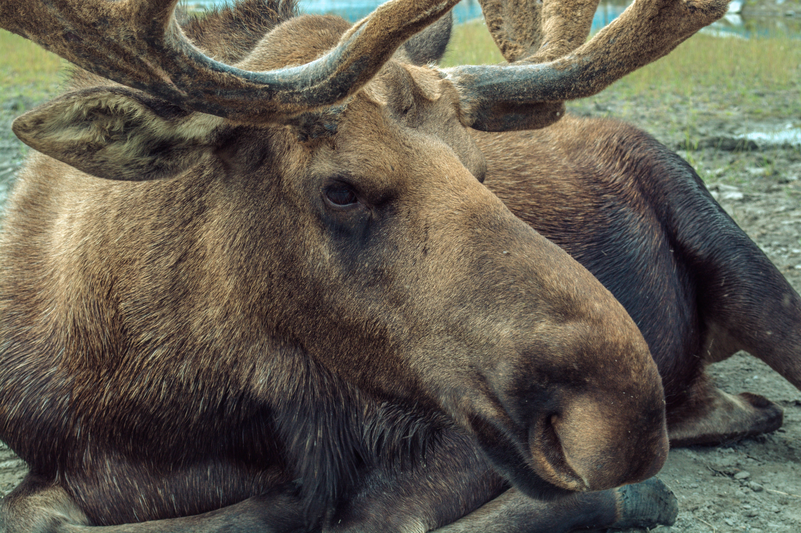

Kâhkêwak

Thin strips of moose meat seasoned and dried until they develop a chewy texture and concentrated flavour.

Welcome to Môswa Meals, a collection of recipes inspired by moose and the traditions surrounding it. Moose has been an important food source for many Indigenous families, and there are many different ways to prepare and enjoy it. On this website, you will find recipes that use different parts of the moose, from familiar cuts of meat to recipes that may be less common. I hope these recipes give you an idea of the different ways moose can be prepared and enjoyed.

Môswa translates to “moose” in Cree. I chose moose as the focus of this website because it brings back memories from my childhood. When I was a child living in Northern Alberta, my dad used to hunt with other family members. I remember eating different types of moose meat and always thought it was so tasty, except for the organs and the nose.
I also wanted to include some recipes that have a personal connection to my family. I included Môswa Nose Soup because it was my late mother’s favourite. My personal favourite is kâhkêwak (dry meat). Dip some kâhkêwak in butter, and I’m in heaven. For me, moose is more than just food. It reminds me of my childhood, my family, and the memories I have of growing up in Northern Alberta.
Thin strips of moose meat seasoned and dried until they develop a chewy texture and concentrated flavour.

A traditional-style soup made with cleaned moose nose, vegetables, and broth.